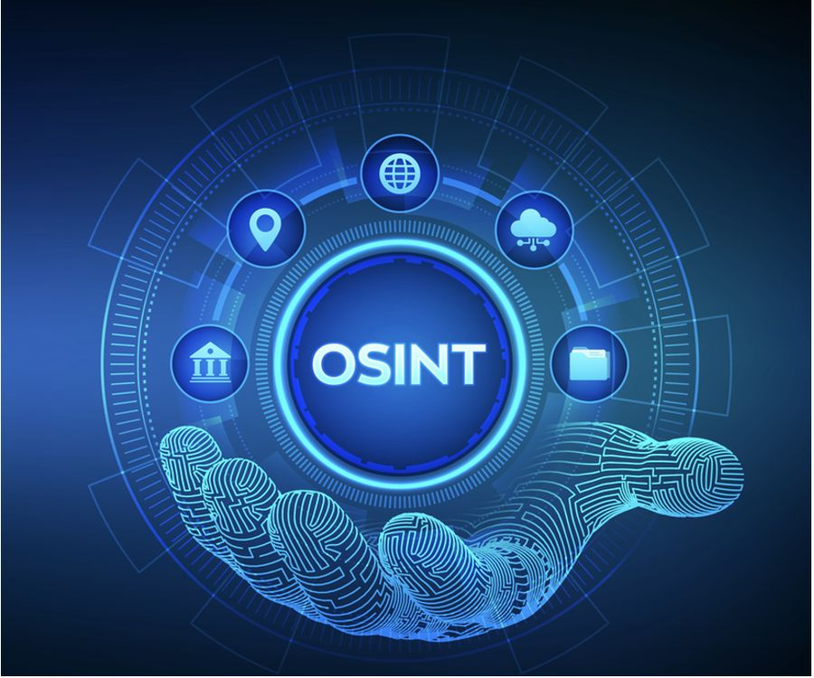

DeepFake
Modification d’image ou de voix ultra réaliste
Nombre d’atteintes numériques en France en 2024
Source : ministère de l’Intérieur
« L’IA n’a pas rendu les attaquants meilleurs, elle permet aujourd’hui à n’importe qui, même sans intelligence ni compétence, de devenir dangereux. »
— Un gars pas con (moi)
La confiance devient une vulnérabilité exploitable à grande échelle.
Modification d’image ou de voix ultra réaliste
Rédaction de messages de phishing « parfaits »
Simplification de la création et de la diffusion
Un attaquant moyen équipé d’IA devient redoutablement efficace.

Une IA peut générer un malware en quelques minutes seulement.

Grâce à l’IA, un simple virus peut choisir le meilleur chemin d’attaque en fonction de l’hôte.
En intégrant de l’IA, un virus peut réagir aux actions de l’utilisateur.
Internet n’oublie rien, l’IA nous rappelle tout.

DeepSearch, ou les applis du genre, permettent de naviguer sur tout Internet pour trouver des infos sur une personne.
La vitesse devient un avantage stratégique pour l’attaquant.

Des millions de serveurs contaminés par des malwares intelligents peuvent se réveiller et servir de bots, pour mener des attaques DDoS par exemple.

L’IA permet de toucher le monde entier avec une seule attaque, par exemple en traduisant selon la langue de la cible.
Avez-vous des questions ?